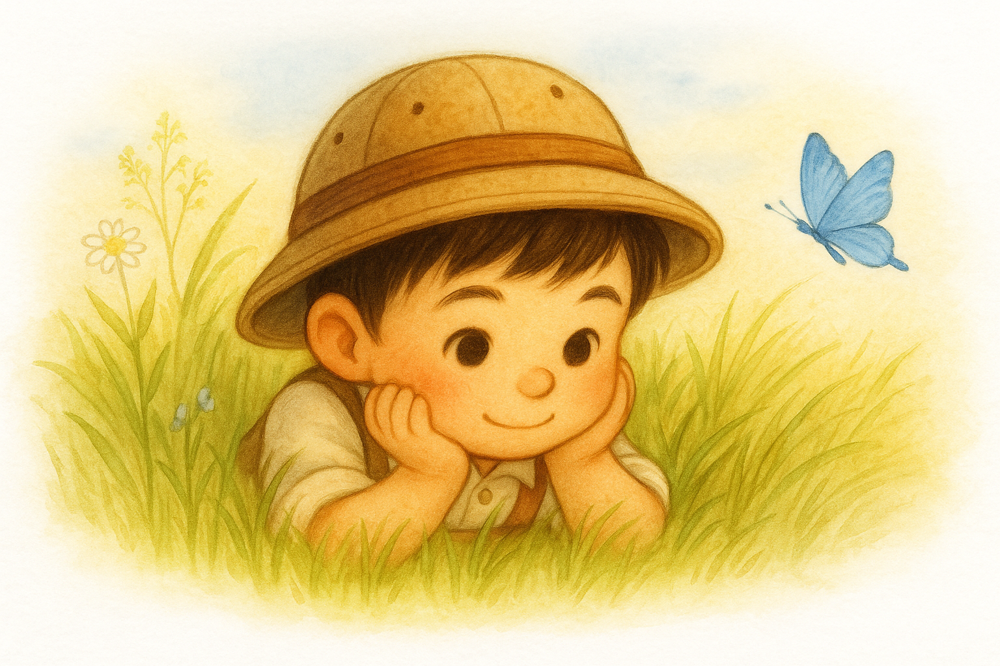
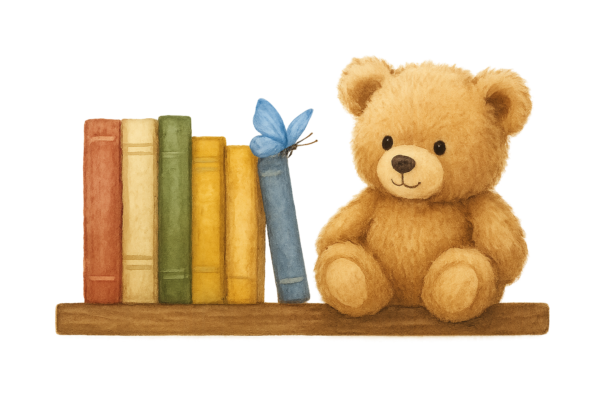

Little Traveller World
Welcome to the World of Little Traveller, Fellow Explorer!
here you can explore new stories, learn about new things and meet new friends.
Don’t forget to participate in our forest challenge and stop by our magic shop it has loots of goodies in it!
Stay curious and kind
